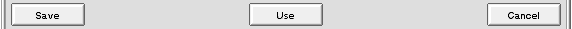

|
|
Settings
|
The settings window can be used to change and test the many options APlayer provides. All changes to the settings takes effect immediately and you have to press cancel to go back to the settings as they were when you entered the settings window.
|
|
Click picture with mouse to get more information
|

Save:
Save the settings (does not close the settings window). |
Use:
Use settings, but do not save them (closes the settings window). |
Cancel:
Cancel changes and close the settings window. |
Options
General
Jump to added module:
Automatically start playing an newly added module. |
Add to list as default:
Set playlist clearing off / on when a module is added by double-clicking the file. |
Remember list when exit:
Save playlist when APlayer quits and load it when APlayer starts again. |
Remember playing module:
Save playing module info when APlayer quits and load it when APlayer starts again. |
Remember module position:
Save playing module position info when APlayer quits and load it when APlayer starts again. |
Show item number in list:
Shows item number before filename in playlist. |
Button tooltips:
APlayer shows small hints regarding the button under the mouse-pointer, whenever the mouse rests for more than 1 second. |
Show module name in titlebar:
Show the name of the playing module in the main window titlebar. |
Set Audio:Length attribute:
APlayer will set playing length of module to its file attribute. This setting speeds up scan added files option. |
Scan added files:
APlayer tries to find and add module playing time to playlist. This scans playlist for all modules with missing playing time. |
Loading
Double buffering:
APlayer loads next module in the list when the actual module is playing. Early load tells APlayer how far (positions) from the ending of the current module APlayer will start loading the next one. Enabling this feature will make the small pause between modules very short. It can be used if you e.g. play a MP3 album where each song is merged into each other. |
When module error is reached:
Tells what APlayer should do when module loading fails.Possible choises:
| Show error dialog |
Asks user what to do. |
| Skip file |
Skips file and starts playing next one in playlist. |
| Skip file and remove from list |
Removes file from playlist and starts playing next one in playlist. |
| Stop playing |
Stops playing. |
|
Playing
Never ending module timeout:
Sets playing time (in seconds) for module if its playing time cannot be calculated. After selected time APlayer skips to next module in playlist. This option can be used with e.g. sid files. |
At end of module list:
Tells what APlayer should do when it has played last module in playlist.
Possible choises:
| Eject module |
Eject module and stops playing. |
| Jump to start |
Starts playing first module in playlist. |
| Loop module |
Plays last module forever. |
|
Paths
Start scan path:
Defines a directory which APlayer will recursively scan through and add all present files to the modulelist when APlayer is started. |
Module path:
Default path for the filerequester to use when you press the play button, the plus button or open command in menus. |
APML path:
Tells APlayer where you keep your modulelist files. |
Mixer
General
Mixer frequency:
Allows you to change the output-quality of the played sound. The quality ranges from 8268 to 48000 hertz. Note that this won't affect APlayer until the next song is played. |
Stereo separation:
100% is total stereo separation ie. left is left and rigth is right. 0% is mono, which forces APlayer to play all sounds in both channels. This can be useful for listening to modules in headphones, where a stereo-separation of 50% will make them sound much better. |
Interpolation:
Helps the sound to be less "rough" and make lesser clicks'n'pops. This pretty much resembles the effect of the filter on the Amiga. Interpolation consumes about 25% more cpu-power than usual. |
Dolby Prologic surround:
Only supported by a few trackers (ImpulseTracker) and is rarely used. If you want APlayer to reckon this and make a difference between the front and rear speakers, enable this function. Ofcourse this requires a Dolby Prologic amplifier connected to your computer. Module called "Rippless.it" uses surround with the speech sample, so it can be used for testing purposes. |
Emulate Amiga led filter:
Sets on Amiga led filter emulation which is basically a low bass filter. Only few mod trackers support this feature. |
Mixer output
Output agent:
You select the agent you wish to use for outputting the sound. If the agent (e.g. the disksaver agent) has any settings they will be displayed below. |
Channels
| Most [read: all] modules uses more than one channel, and sometimes you would want to disable certain channels (e.g. the annoying hihat in channel xx). You have the choice between finding the given channel by trying every button one after one, or you can use the buttons to the left which change the state of all the given channels. Try it out! |
Network
Proxy Server
Use Proxy:
If this checkbox is checked APlayer will use proxy. Proxy address tells to APlayer which address and port it should use. APlayer support only HTTP proxy. |
Updates
Check for APlayer updates:
This selection tells when APlayer should check for updated version.Possible choices:
| Never |
Does not check for updates. |
| On Startup |
Checks every time APlayer is started. |
| Daily |
Checks once every day. |
| Weekly |
Checks once every week. |
| Monthly |
Checks once every month. |
|
Download to:
Tells where updates should be downloaded to. |
Check now:
This buttons forces APlayer to check for updated version.NOTE: Update checking needs working internet connection. |
File types
File types
Register selected types:
Registers file types which you have selected from list. |
Register all types:
Registers all file types supported by APlayer. |
NOTE: Registering filetypes makes APlayer preferred application with those filetypes. This means that after registering APlayer will play all filetypes you registered instead of possible other application which you may have used before. |
Options
Change module file type:
APlayer corrects wrong mime-types on modules. |
Register file types on startup:
Registers file types every time APlayer is started.NOTE: Registering file types on startup causes a few second delay during which Tracker does not respond, so you may want to turn this option off later. This delay is caused by a bug in Tracker and APlayer can't do anything about it. |
Player / Agents / Clients


| The players, agents and clients are considered as add-ons, hence this common description of their setting-windows. To the left you can see a list of the available add-ons with their name and version. If add-on name is in blue color it means that it is in use and is used
when playing modules, so it is easy to see which player and output agent is used to play that module. Just like in the tracker, columns can be sorted and moved around as you like. To the right the description of the currently selected add-on is shown.
To disable (prevent it from being loaded) you can double-click any add-on.
Some players/agents/clients have special settings (e.g. the SID-player) and to set those you select the add-on and press Settings.
Some add-ons have something to display while the music is being played and it can showed by using the Display button. |

|
|
|
|